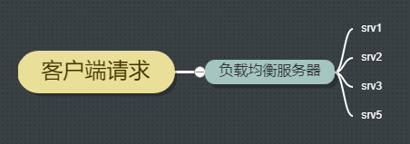

Nginx 提供的三种负载均衡方法
负载均衡（Load balancing）
负载均衡可以把多个服务器组合在一起，优化资源利用率，最大化吞吐量，减少延迟并确保容错。

Nginx 是一种常用的 HTTP 负载均衡服务。
Nginx 提供的负载均衡机制（或者叫方法）
Nginx 提供了 3 中负载均衡机制。
- 轮询机制。类似平时我们分东西，你一个，我一个。Nginx 分发请求到每个服务器。
- 最少连接机制。Nginx 将下一个请求分配给活动连接数最少的服务器。
- ip-hash 机制。Nginx 根据 ip-hash 算法，分配最终执行每个请求的服务器。下面章节会有详细说明。
轮询机制-按照权重轮询
最简单的负载均衡配置如下：
http {
upstream myapp1 {
server srv1.example.com;
server srv2.example.com;
server srv3.example.com;
}
server {
listen 80;
location / {
proxy_pass http://myapp1;
}
}
}
Nginx 监听 80 接口的请求，通过 myapp1 配置的规则，分发给配置好的各个服务器。
如果不指定各个业务服务器的权重，则权重为 1。
上面的例子中，每个服务器平分各个请求。如果 Nginx 接收到 3 个请求，那么 srv1、srv2、srv3 都会分发到一个请求。
我们还可以使用 weight 指定各个应用服务器接受分发请求的权重。像这样：
upstream myapp1 {
server srv1.example.com weight=3;
server srv2.example.com;
server srv3.example.com;
}
应用服务器的权重默认是 1，我们指定了 srv1 的权重是 3，向上面的例子，每 5 个请求，srv1 会被分发到 3 个，srv2 接收到 1 个，srv3 接收到 1 个。
最少连接机制
这种负载均衡机制下，Nginx 会检测、并将请求分发给负载最低的服务器。
要使用这种机制，使用 least_conn ：
upstream myapp1 {
least_conn;
server srv1.example.com;
server srv2.example.com;
server srv3.example.com;
}
ip-hash 机制
在轮询机制和最少连接机制下，Nginx 没法保证一个客户端的每次请求都连接到同一个服务器。
如果想要保证每次客户端的请求都连接到一个业务服务器。比如，业务上有持久会话要求的话。那么，可以使用 Nginx 提供的 ip-hash 负载均衡机制。
使用 ip-hash ，Nginx 会保证同一个 ip 的客户端每次请求都会连接到相同的业务服务器。
我们可以使用 ip_hash 配置：
upstream myapp1 {
ip_hash;
server srv1.example.com;
server srv2.example.com;
server srv3.example.com;
}
Nginx 对业务服务器的健康检查
Nginx 也实现了对业务服务器的健康检查功能。
如果 Nginx 检查到了某一业务服务器出现了错误，就会标记，并且一段时间内不会向服务器分发任何请求。
max_fails 参数设置在 fail_timeout 期间应与服务器进行的连续不成功尝试通信的次数。默认情况下，max_fails 设置为 1。当它设置为 0 时，将禁用此服务器的运行状况检查。 fail_timeout 参数还定义服务器将被标记为故障的时间。服务器出现故障之后，在间隔时间为 fail_timeout 之后，nginx 将开始使用实时客户端的请求来正常探测服务器。如果探测成功，则将服务器标记为活动服务器。